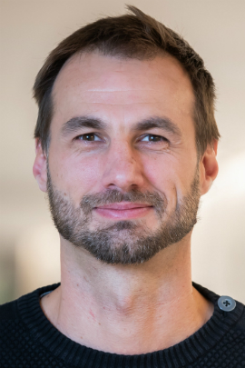
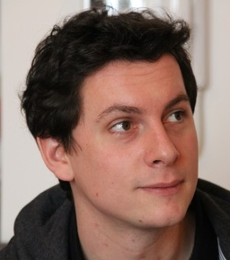

Instructors
| David Bouyssié develops open-source tools for the quantification of peptides and proteins from LC-MS/MS raw data. This includes the creation of algorithms dedicated to the analysis of label-free experiments, such as signal detection, retention time alignment, intensity normalization and data summarization, but also user-friendly graphical interfaces for LC-MS data visualization. David organizes regularly practical bioinformatics workshops in EuPA congresses, and teaches quantitative proteomics at the University of Toulouse (Master degree). Affiliation: University of Toulouse, IPBS/CNRS, FR |
|  |
Veit Schwämmle develops and applies computational solutions for improved data analysis in large-scale omics experiments with focus on proteins and their post-translational modifications (PTMs). The aim is to better understand the functional protein states in order to determine, confirm and predict their contribution to cell behavior and disease.
Veit is associate professor and teaches courses in bioinformatics on Bachelor, Master and PhD level. He gives workshops at international conferences and organises European hackathons.
Affiliation: University of Southern Denmark, Odense, DK
|
|  |
Marc Vaudel's research focuses on better understanding the interplay between genomics and signalling in metabolic diseases. He is involved in multi-omics research on diabetes and early growth, using large data sets to better characterize the mechanisms underlying diseases. He developed multiple methods and tools for proteomic and genomic data analysis. He is actively involved in genomic consortia and in the handling of large cohort data.
Marc has been been an instructor in multiple GTPB courses in proteomics data analysis. He is regularly providing bioinformatics training in research institutes, and is a guest lecturer at the University of the Faroe islands.
Affiliation: University of Bergen, Bergen, NO
|
Back
Back to main page.